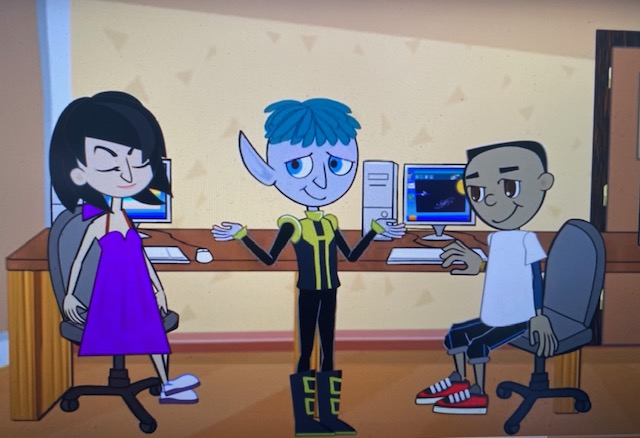

×
Home
Focused Breathing
Progressive Muscle Relaxation
Soundscapes
Distract Your Thoughts
Sesame Street and Headspace: Monster Meditations
Mindfulness and Meditation
Guided Imagery
Calming Down When You're Frustrated
☰ Menu
Guided Imagery
Guided imagery exercises encourage you to imagine a peaceful place, focus your attention away from distressing thoughts, and feel calmer.
Balloon Peace Out: This is a guided visualization and relaxation exercise for kids.
Peace Out Guided Relaxation for Kids
This 3 ½ minute video of guided imagery of a balloon in the sky teaches you how to gain control of your stressful energy when it becomes very hard to handle.
Bring It Down – Flow | GoNoodle

Learning how to practice guided imagery: Mindfulness Exercises for Kids: Still Quiet Place (GoZen!)